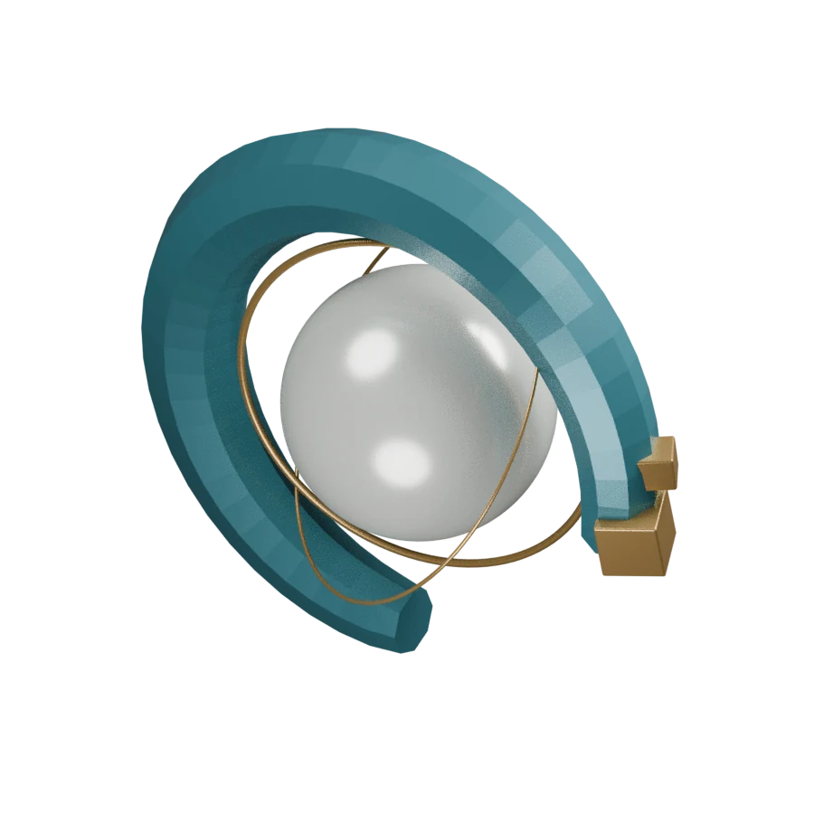
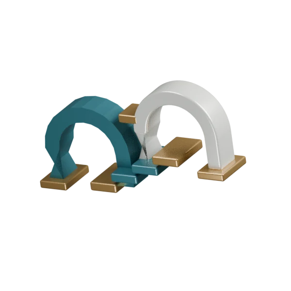
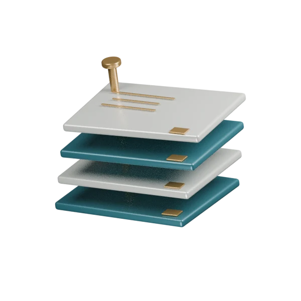
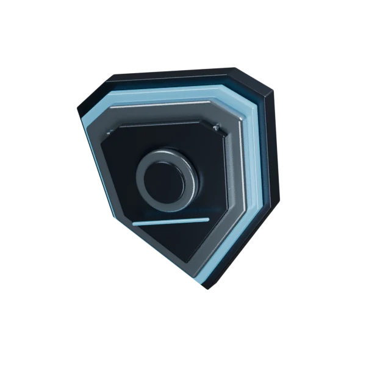
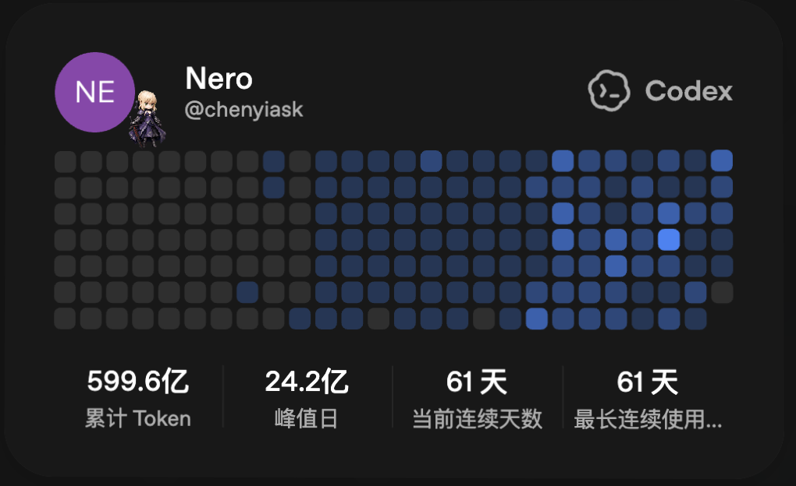
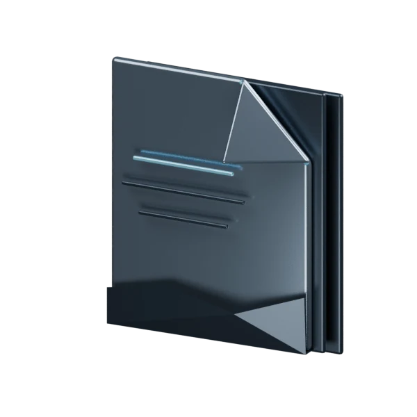
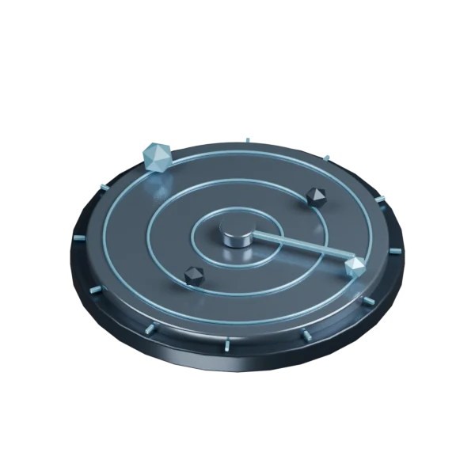

陈祎
七年投资银行与资本市场项目经验，覆盖业务财务核查、审核问询、披露文件与跨专业协作。将投行业务经验转化为 NERO Banker、NERO Principal 等 AI 应用：主导业务建模、需求与工作流设计，借助 Codex 等 AI 编程工具实现，并负责结果验证与人工复核。


职业经历与项目
国金证券为一段完整任职。项目经历包括当前的新三板项目、ICKey 创业板 IPO，以及超捷股份、森松国际和台州水务等历史项目。
国金证券 · 投资银行业务总监
2019 年 9 月至今，历经实习、项目执行、副总裁和业务总监阶段。工作覆盖项目承揽与执行、业务财务核查、审核问询、披露文件、底稿和多专业中介协作。

代表项目 · ICKey（301563）创业板 IPO
创业板 IPO 的高约束执行场景
上市申报、审核问询和披露文件需要把业务真实性、财务真实性、底稿证据、交易所沟通材料和招股书口径保持一致。这类项目训练的是复杂问题拆解、事实链管理和高压交付。
可公开信息 / 职责范围
从投行业务需求到 AI 应用
我负责业务建模、需求拆解、工作流设计与业务验收，借助 Codex 等 AI 编程工具完成实现和迭代。项目覆盖投行工作台、知识检索、研究与材料制作；代码实现采用 AI 辅助方式，业务判断和最终复核由我负责。
知识资产 · 生产工具

AI 辅助开发记录Codex 使用记录 · 2026-08-28
工具使用记录
截至 2026 年 8 月 28 日，我已连续 61 天使用 Codex。以下仅为工具使用记录，不代表开发熟练度、业务效果或用户规模。

AI 本地系统架构图
AI 本地系统架构图

NERO Banker
面向 IPO 与新三板业务的本地系统，连接证据、业财分析、披露审阅、问询、底稿和人工复核。
桌面端与前端
NERO Banker
客户资料和业务界面不公开，以系统边界、运行机制和净化后的能力说明展示实际落地。
公开范围 / 统计口径
公众号长文

这里展示 Nero Writer 已登记发布的 17 篇公众号长文，公众号图片消息和小红书组图不纳入。点击任一标题，可在浮窗中查看核心观点、主线和发布状态。
在微信中搜索公众号名称或公众号 ID，再按下列标题查找长文全文。
gh_dd2c48491319